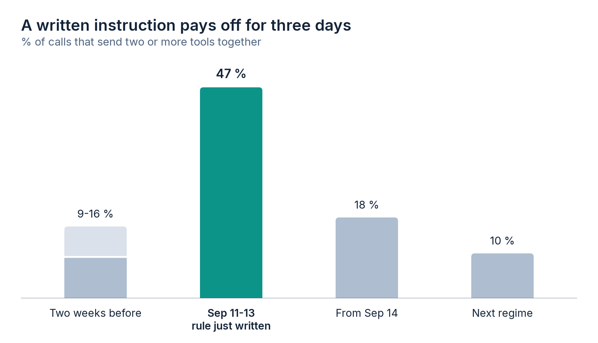
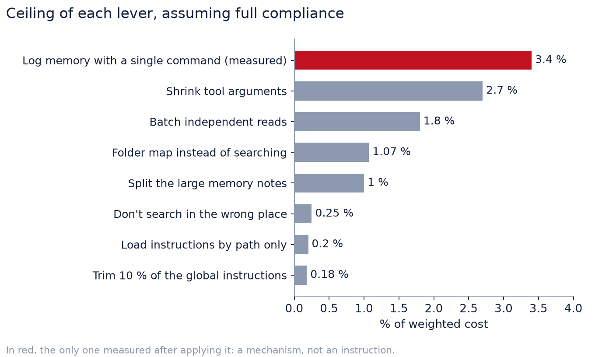
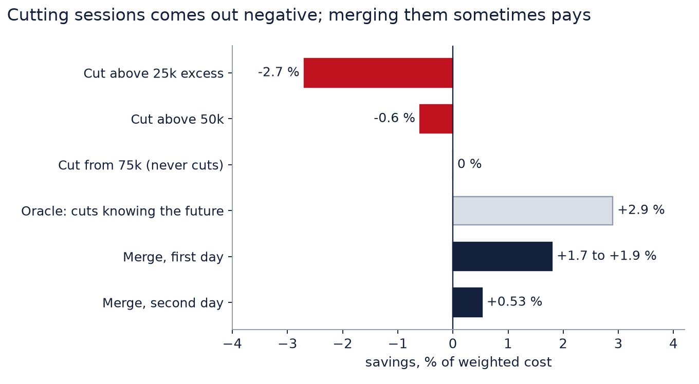

In the previous article I explained that 94 % of what I spent working with a coding agent went into re-reading context, and I closed with four habits to bring it down. After publishing it I kept measuring. The idea was simple: take every lever that came up (in my notes, in forums, in what the agent-memory projects do), estimate the most it could possibly yield, apply it and measure again.
The result is not the one I expected. Almost every lever was small. Several moved nothing. A couple came out negative. And the biggest correction of the month was not a technique for saving, but an error in the yardstick I was using to measure everything else.
The short version, for anyone without twelve minutes
- My meters counted every call 1.9 times. The totals in the previous article halve; its conclusions do not change.
- The levers left after the first diagnosis yield, almost all of them, less than 2 % of the spend. Abbreviating and dropping accents yield nothing.
- What did pay off was mechanism (a hook, a command that does three steps in one). A rule written into the agent's instructions lasted three days.
- With sessions that are already short, cutting sessions comes out negative, and sometimes the opposite pays: keep going in the same one.
A note on units before going on. When I say "% of the spend" I mean weighted cost, not volume: each kind of token is weighted by its relative price in the API, with input at 1, output at 5, cache reads at 0.1 and cache writes at 2 (one hour) or 1.25 (five minutes). Volume tells you how much was re-read; weighted cost, how much it weighs. Almost all the volume is cache reads and, even so, they are less than half the cost.
First the yardstick had to be fixed
Mid-month, going over eight days of usage, the totals did not match the number of calls. The
cause was trivial and had been there for weeks. Claude Code writes one line in the transcript for
each block of the response (the text, each tool call) and repeats the same usage
block in all of them. My scripts added up lines. Each call was counted, on average, 1.9
times.
The fix was to group by requestId and count once. Those eight days went from
reporting 1,003 million tokens to 540 million. The drag from tool results fell almost by half,
because the later turns were also being counted twice.
That affects the previous article. Its absolute figures were computed with the old scripts. With the same window and the corrected count, the 313 sessions become 294, the 2,356 million tokens become 1,212, re-reading goes up from 94 % to 96 %, the curve's exponent goes from 1.20 to 1.19, and reading whole files is still 55 % of the drag. The totals halved; the shape of the argument did not move. I point it out here because those figures are still published, and the repository already prints the corrected ones.
The second correction to the yardstick came from somewhere else. To estimate how much the agent's memory notes weighed, I converted characters to tokens with the rule that gets passed around, about 3.5 characters per token. Calibrated against my own data (the jump in context between two consecutive calls, which is exactly what was added), the model gave 2.1 characters per token for prose in Spanish. With that, memory was not 7 % of the spend, as I had calculated, but 10 %. The tool-result meter divided by 4, and I only fixed that on 25 September: the figures in the first part that depended on that conversion are now corrected there.
Neither correction changed a conclusion. Both changed how much each lever could gain, which is the only thing that helps decide which one to work on.
Measure the regime, not the history
The second mistake was subtler. When you change something in the agent's setup (an instruction, a hook, a reading script), the average over the last 45 days mixes two regimes and describes neither.
It happened to me with the memory notes. Over the full history, the diagnosis was clear: almost half of what was read from them was accumulated history that was not needed, and the obvious fix was to split each file in two, one with the current state and another with the history. But three days earlier I had changed the way they were read. Instead of opening the whole file, the agent first asked for a map of sections with the cost of each one, and then fetched only the one it needed. Measured only from that change, there were 2 whole-file reads against 198 by map or by section, and the waste of that ladder, compared with having read the whole file in that same session, was 1 %. Splitting files would have been work with zero return.
Since then every meter accepts --desde and --hasta (from and to)
with a time, and they cut by call, not by session. With both you can isolate a regime that has
already ended and compare it with the next one. And there is a separate script,
regimen.py, that warns above the figures when the window crosses a configuration
change.
The first time I used it to check a change, the estimate missed on both sides. I had applied three cuts together. One of them, logging the memory notes at the end of the session with a single command instead of reading and editing several files, I had estimated at 0.9 points of the spend; it yielded 3.4 (memory writes dropped from 4.5 % to 1.1 %). Another, shrinking one project's instruction file to a third, promised about 8 thousand fewer tokens per call and gave 6 thousand, with four sessions before and three after. And the total dropped 26 %, which I cannot attribute to anything: the new window had ten long sessions against 35 short ones in the previous one. The only thing that holds up when comparing windows that different is what is measured per call and per session on the pieces the change touched.
What paid off was mechanism, not text
The big improvements of the month have something in common: none of them depends on the agent remembering anything. They are code that runs on its own.
The cost ladder. The concrete problem was a memory note of 564 lines, about 17 thousand tokens, with 29 sections. Faced with a specific question about one of them, the only realistic way out was to open it whole. Two options were added to the reader: one that lists the sections with their line range and what each one costs, without reading any of them (about 1,200 tokens), and another that fetches a single section (about 1,300). The principle that stuck is that you see the cost before paying it, and that each rung is worth roughly a tenth of the next.
Blocking re-reads. Auditing a month of memory reads, 47 % were of the same file in the same session: text that was already in the context. It was solved with a hook that denies the second full read of the same file. It is the only block that cannot lose information, because what it blocks is already loaded.
Routing. A hook suggests, on every message, which memory notes might help. It used to match the message against hand-written trigger lines; now it runs BM25 against the body of the notes and against the three previous messages in the session. To know whether it worked I built a test bench from the transcripts themselves: for each of my messages, which notes were actually opened to answer it. On the cases where routing is the only way in, the hit rate within the top four suggestions went from 41 % to 76 %, with half the tokens per message. The number looked too good to me, so I counted only the notes that were not in the context yet (suggesting one that is already open saves nothing): 68 % against 43 %. The advantage did not come from repeating what had already been read.
That bench also corrected a figure I had taken as solid. I had written that no word-based routing could get past 70 % accuracy, because almost a third of the messages bring nothing to search with ("check that everything came out right"). I had measured it looking at each message on its own. With the two previous ones alongside, many of those messages do have something to search with, and the installed routing gets past that supposed ceiling. Where the real ceiling is, I do not know.
And one thing I decided not to do. Fourteen notes had never been opened in 393 sessions, and pruning them seemed obvious. Looking at them one by one, "never opened" was not "redundant": two were in the index that is always loaded and work precisely without being opened, and several held rules that were not written anywhere else. They had not been opened because the topic had not come up. Deleting them meant losing knowledge to save tokens that, as long as they are not opened, cost nothing.
Written rules wear off
The flip side of the above. Every API call re-reads the whole context, so one extra call costs more than almost any file. I measured how many calls the agent made per message of mine and wrote an explicit rule into its instructions: chain into a single command whatever does not depend on a previous result, and launch independent tools together.
Ten days later, calls per message had not gone down. They had doubled.
| Window | Mean per session | Median | Overall |
|---|---|---|---|
| Before the rule | 18.2 | 13.5 | 14.6 |
| Ten days with the rule written | 24.3 | 19.5 | 23.0 |
| Next regime | 32.7 | 27.0 | 29.2 |
That number is a little misleading. Messages per session had fallen from 1.7 to 1.1: I was sending longer tasks in a single message. Calls per message measures the size of the task as much as discipline, so it works as an alarm, not as a verdict. What is comparable is the behavior the rule asked for. Shell commands with two or more chained steps were 84-87 % before writing it and 86 % after: they were already chained. And calls with more than one tool rose to 47 % in the three days after writing the rule, only to go back to 18 % and then to 10 %. Three good days and it wore off. The same thing had already happened to me with another rule a few weeks earlier.

I also tried the reverse mechanism: taking instructions out of the file that is always loaded
and putting them in a file that Claude Code loads only when working on certain paths
(.claude/rules/ with paths:). It works, but only reading or editing with
the file tools triggers it. If the agent reads through the shell, it does not load. Over a month,
of the sessions that touched that folder, in 78 % the rule would not have come in. It is useful
for reference guides tied to files that get edited, never for a rule that must not be broken.
The conclusion I drew: a written instruction yields what it yields in its first days, and then the usual behavior comes back. If something matters, it goes in as mechanism (a hook that blocks, a command that does three steps in one), not as one more line of instructions.
The table of small levers
This is what the rest of the month measured. The ceiling column assumes full compliance, which does not exist. The cost column is what you pay for trying.

| Lever | Ceiling | What it costs or what happened |
|---|---|---|
| Batch independent reads into one call | 1.5-1.8 % | A warning after every lone read costs 0.25 % and only breaks even at 15 % compliance. |
| Shrink tool arguments (long scripts, files written whole) | 2.7 % | That is the total of all arguments. The "edit instead of rewrite" rule touches ~0.1 %. |
| Load instructions by path only | 0.2 % | Does not load if the agent reads through the shell. |
| Trim the global instruction file | 0.18 % per 10 % | Discarded. |
| Split the large memory notes | ~1 % | The ladder had already solved it. |
| Don't search in the wrong place (another inbox, another folder) | 0.25 % | It is a floor. Justified by quality, not by tokens. |
| Locate files with a folder map instead of searching | 1.07 % | Includes the searches that were necessary. |
| Abbreviate the instructions | 0 | 4.8 % fewer characters, 0.6 % more tokens. |
| Write without accents or ñ | 0 | 1 % more tokens. |
| Drop the cache from one hour to five minutes | n/a | On a subscription, one hour is already the default. |
Abbreviating deserves one more line, because it is the question I get asked most. My instructions are written in Spanish, and the tokenizer splits by vocabulary pieces, not by letter. Que, memoria or después were already one token; q, mem or dsp still cost one, and odd symbols ("c/", "x") added pieces. The correctly accented form turned out to be the most frequent one in the vocabulary, which is why stripping the accents made it more expensive. You cut by removing content, not by compressing it.
And I mention searching in the wrong place because I was surprised at how little it weighed. Of 2,064 searches in two weeks, 99 failed, and I labeled them by hand one by one because the automatic classification confused a retry with different words with giving up. The ones that went to the wrong source (looking for a personal email in the work inbox, mostly) added up to 0.25 % of the spend, about two calls a day. It is worth fixing anyway, but because concluding "there is nothing" after looking in the wrong place is an error of content, not of cost.
Splitting sessions does not pay (and here I contradict myself)
In the previous article the number one lever was opening a new session when changing topic. A month later, the measurement says that cutting mid-task comes out negative, and that sometimes the opposite pays.
The math is this. Cutting forces you to write the session prefix to the cache again (the instructions, the tool definitions, what the agent needs to get started), and writing costs 2 where reading costs 0.1. What you save is re-reading the accumulated excess on every following call. Cutting only pays when that excess, multiplied by the calls left, goes past about 19 times the size of the prefix. With sessions like mine, almost never.
I simulated it on the transcripts. The rule "cut when the excess goes past 25 thousand tokens" gave -2.7 %; with 50 thousand, -0.6 %; from 75 thousand on it no longer cut any session. An oracle that cuts at the best moment, knowing the future and without paying the cost of reorienting, reached 2.9 %, and only in four sessions.
What did pay was the reverse: carrying on with the next task in the same session when it is still light (under 20 thousand tokens above the floor, same folder, less than an hour between the two). The first day I measured it, it gave +2.2 %. Then I found that the simulation accepted merging sessions that had actually run in parallel, and without them it came to +1.7 to +1.9 %. The second day gave +0.5 %: that day the work was already chained in long sessions and there was hardly anywhere to merge.

There is no contradiction underneath, there is a change of regime. The first article measured a period of sessions hundreds of turns long, where cutting saved a third. The habit worked: in the regime I measured, 43 of 54 sessions had a single message, with a median of 13 calls. With sessions that short, the margin is on the other side. I do not recommend it yet: it is two days of different regimes, it describes rather than recommends, and it does not measure the other cost of merging topics, which is the quality of what an agent answers with two matters mixed in its context.
The cache, at the prices actually paid
In the current regime, cache reads are 46 % of weighted cost and cache writes, 36 %. Writes weigh more than they seem because they are paid at double price: all of them are one-hour. I wanted to try dropping to five minutes, which costs 1.25 instead of 2 in the API, and it turned out that on a subscription one hour is the default for included usage. The surcharge in my estimate was the API's, not what gets billed.
Broken down by origin, writes were 36 % session start and 64 % new content. Rewrites due to an expired cache were zero in that regime. And the start is not writing the whole prefix: the first call reads about 42 thousand tokens from the cache, which is the prefix shared across sessions and survives even more than an hour without activity, and writes about 22 thousand of the session's own. Even so, the start weighs 14 % of the cost, because most of my sessions are short. It is the same math that makes cutting them negative.
Against the pioneers
Mid-month I reviewed how the most cited projects handle memory: Anthropic's guides on context engineering and its memory tool, Manus (stable prefix and the file system as memory), claude-mem (progressive disclosure in three layers), Letta (consolidation while the agent is idle) and Mem0 and Zep, whose benchmarks cannot be reproduced from one harness to another.
The surprise was that the system I had put together measurement by measurement was already on par. The routing that suggests, the section map and reading a single section are the same progressive disclosure as claude-mem, with the cost in view at every rung. Separating, in each note, a current state that gets rewritten from a history that only grows does what Zep does with temporal validity. I ruled out installing any of them, or a vector database: they all add fixed text at the start of every session, which is exactly what gets paid for most times, and the word-based routing was already hitting 75 %.
And with the token calibration corrected, the whole memory (instructions, index, reads, writes and routing) weighed 10 % of the cost, and what could be trimmed within that, between 2.5 and 3 %. It was applied, and it was the batch I talked about above.
What to measure, and with what
If anything stuck from this month, it is the order. Before applying a lever: measure its ceiling with your own transcripts, assuming full compliance. If the ceiling is small, it is not even worth the text that explains it. If it is big, prefer a mechanism to an instruction. And after applying it, measure only from the moment of the change.
The scripts are in context-economy,
which now has six. They read the .jsonl files Claude Code leaves on disk and send
nothing anywhere.
python medir_consumo.py --desde "2026-09-21 11:44"
python medir_tool_results.py --desde "2026-09-21 11:44" --top 25
python medir_paralelismo.py --desde "2026-09-21 11:44" --muestra pares.csv
python medir_juntar.py --desde "2026-09-21 11:44"medir_consumo.py gives the spend per session, with volume and weighted cost.
medir_tool_results.py ranks tool results by drag. medir_paralelismo.py
computes the ceiling of batching reads and leaves a sample to check by hand how wrong its heuristic
is (in my case, quite: of 30 pairs it marked independent, 12 and a half were). medir_juntar.py
simulates carrying on in the same session instead of opening another. regimen.py runs
inside the others and warns if the window crosses a configuration change.
There are two figures in this article that cannot be reproduced with that repository: the routing hit rate and the cost of searching in the wrong place. They come from two scripts that depend on my notes reader and on the structure of my folders, and publishing them would mean publishing something that does not run on another machine. What can be redone is the method, which I described above: the routing bench is built from your own transcripts (each message against the notes that were actually opened to answer it), and failed searches are detected by empty result and classified by hand. The session-cutting simulations and the cache breakdown are not in the repository either, since they ran once on one window; the session-merging one is, because I am going to repeat it.
These figures belong to one person and their way of working, just as in the previous article. The message I take away does not depend on that. Once the first diagnosis has been applied, what is left to gain is small and spread out, and the only way not to spend a month on 0.2 % levers is to know how much each one yields before moving it.
Frequently asked questions
Why do scripts that add up the usage block in the transcripts come out double?
Because Claude Code writes one line per content block of each response (text, tool call) and repeats the same usage in all of them. Adding up lines counted each call about 1.9 times. You have to group by requestId, or by message.id when it is missing, and count once.
Is it better to cut the session or keep going in the same one?
It depends on how long your sessions are today. With sessions that were already short, cutting mid-task came out negative (between -2.7 % and -0.6 % depending on the threshold), because every new session writes the prefix to the cache again. Carrying on with the next task in the same session, when it was still light, paid between +0.5 % and +1.9 % depending on the day.
Does abbreviating or dropping accents save tokens?
No. Measured on the same instruction text, written in Spanish, the abbreviated version had 4.8 % fewer characters and 0.6 % more tokens; without accents or ñ, 1 % more. The tokenizer splits by vocabulary pieces, not by letter. What moves the spend is how much text goes in and how many calls re-read it.
Does it work to tell the agent in its instructions to batch reads into a single call?
It worked for three days and then wore off. Calls with two or more tools went up to 47 % and fell back to 10-18 % from the fourth day on. The ceiling was small anyway: batching every independent read would have saved between 1.5 % and 1.8 % of the spend.